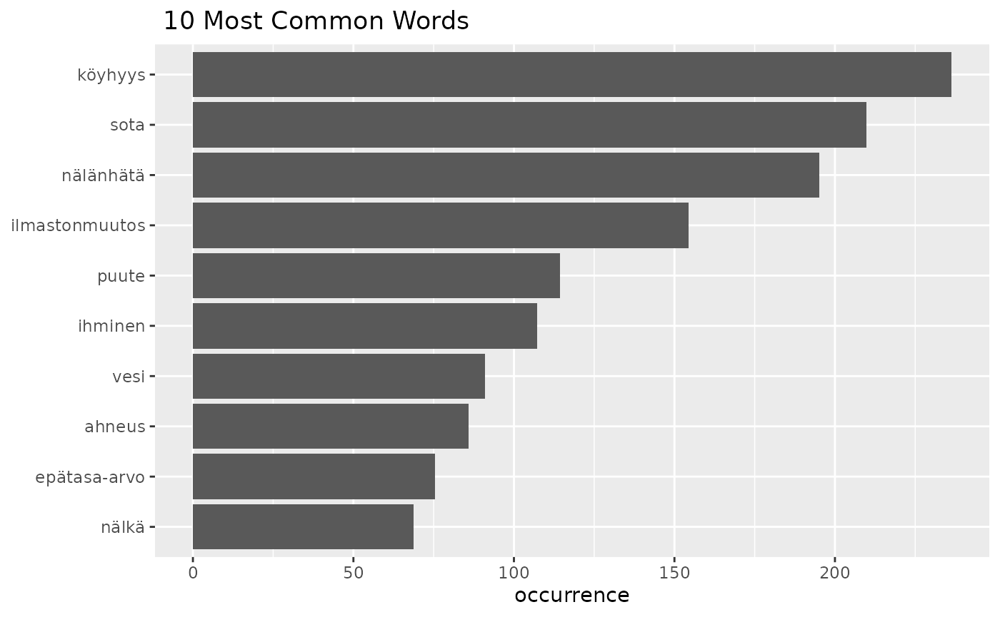
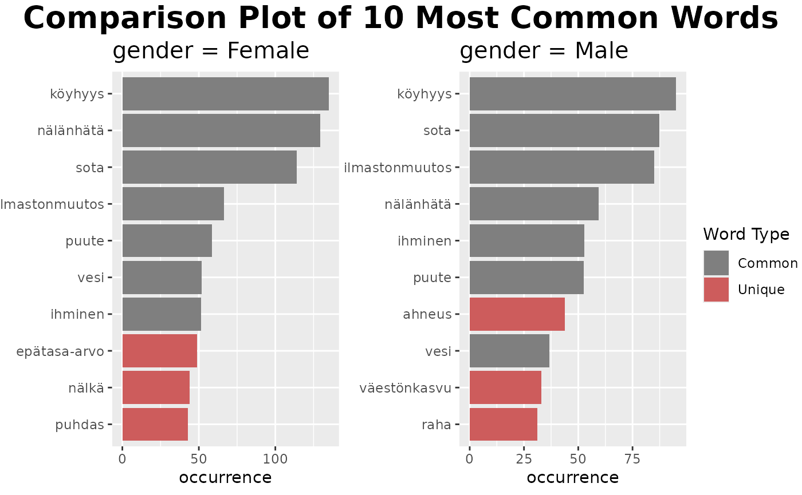

Extra-UseWithSurveyPackage
Source:vignettes/web_only/Extra-UseWithSurveyPackage.Rmd
Extra-UseWithSurveyPackage.RmdIntroduction
The new updated version of finnsurveytext works with
svydesign objects which can be created with the
survey R package. There are
two ways that svydesign objects can be used:
- As an input during the pre-processing of your data.
- As a way to add weights and additional columns within data exploration and comparison functions
First, let’s create a svydesign object for use in this
tutorial:
We will use the dev_coop sample dataset for the
tutorial, and create a svydesign object from this sample
data.
svy_d <- survey::svydesign(id = ~1,
weights = ~paino,
data = dev_coop)Option 1: Formatting data using svydesign object
The relevant function here is
fst_prepare_svydesign().
Explanation of parameters:
-
svydesign: the name of the svydesign object -
question: the column of ‘data’ that contains the open-ended question -
id: the ID column in ‘data’model: a Finnish language model available for udpipe, “ftb” or “tdt”. (If you do not provide a value, this will default to “ftb”.) -
stopword_list: a list of stopwords to remove from your ‘data’. (To find relevant stopwords lists, you can runfst_find_stopwords(). If you do not provide a value, this will default to “nltk”. “manual” can be used to indicate that a manual list will be provided.) -
use_weights: optional, a boolean as to whether to include weights from the svydesign. (If you do not provide a value, this will default to TRUE.) -
add_columns: any columns you want to add to the formatted data from the svydesign object, such as for use in comparison functions. (If you do not provide any values, this will default to NULL.) -
manual: an optional boolean to indicate that a manual list will be provided. (stopword_list = "manual"can also or instead be used. If you do not provide any values, this will default to FALSE.) -
manual_list: the manual list of stopwords if you choose to provide one. (If you do not provide any values, this will default to an empty list.)
Let’s prepare our data below:
df <- fst_prepare_svydesign(svydesign = svy_d,
question = 'q11_3',
id = 'fsd_id',
model = 'tdt',
stopword_list = 'snowball',
use_weights = TRUE,
add_cols = c('gender','region')
)The data is now formatted:
| doc_id | paragraph_id | sentence_id | sentence | token_id | token | lemma | upos | xpos | feats | head_token_id | dep_rel | deps | misc | weight | gender | region |
|---|---|---|---|---|---|---|---|---|---|---|---|---|---|---|---|---|
| 1 | 1 | 1 | saastuminen ja luonnonvarojen liikakäyttö, nälänhätä ja ylikansoittuminen | 1 | saastuminen | saastuminen | NOUN | N | Case=Nom|Derivation=Minen|Number=Sing | 0 | root | NA | NA | 0.544 | Female | Muu Etelä-Suomi |
| 1 | 1 | 1 | saastuminen ja luonnonvarojen liikakäyttö, nälänhätä ja ylikansoittuminen | 3 | luonnonvarojen | luonnonvara | NOUN | N | Case=Gen|Number=Plur | 4 | nmod:poss | NA | NA | 0.544 | Female | Muu Etelä-Suomi |
| 1 | 1 | 1 | saastuminen ja luonnonvarojen liikakäyttö, nälänhätä ja ylikansoittuminen | 4 | liikakäyttö | liikakäyttö | NOUN | N | Case=Nom|Number=Sing | 1 | conj | NA | SpaceAfter=No | 0.544 | Female | Muu Etelä-Suomi |
| 1 | 1 | 1 | saastuminen ja luonnonvarojen liikakäyttö, nälänhätä ja ylikansoittuminen | 6 | nälänhätä | nälänhä | VERB | V | Mood=Imp|Number=Sing|Person=2|VerbForm=Fin|Voice=Act | 1 | conj | NA | NA | 0.544 | Female | Muu Etelä-Suomi |
| 1 | 1 | 1 | saastuminen ja luonnonvarojen liikakäyttö, nälänhätä ja ylikansoittuminen | 8 | ylikansoittuminen | ylikansoittuminen | NOUN | N | Case=Nom|Derivation=Minen|Number=Sing | 1 | conj | NA | SpacesAfter= | 0.544 | Female | Muu Etelä-Suomi |
Option 2: Using svydesign object in data
exploration
The svydesign object can be used to add weights
and other columns during data exploration.
First, let’s create formatted data without weights and additional
columns ready to use with our svydesign object.
df2 <- fst_prepare(data = dev_coop,
question = 'q11_3',
id = 'fsd_id',
model = 'ftb',
stopword_list = 'nltk',
weights = NULL,
add_cols = NULL)Within the data analysis functions, there are 3 parameters (which are
in each function) which are used to add information from the
svydesign object. These are:
-
use_svydesign_weights: should be set as TRUE if we want to use weights from within a svydesign object. -
id: only required if weights are coming from asvydesignobject -
svydesign: thesvydesignobject
Within the initial functions (the ones which are not used
for comparison between groups) these are used to add weights from the
svydesign object.
For example,
fst_wordcloud(df2,
pos_filter = c("NOUN", "VERB", "ADJ", "ADV"),
max=50,
use_svydesign_weights = TRUE,
id = 'fsd_id',
svydesign = svy_d)
fst_freq(df2,
number = 10,
norm = NULL,
pos_filter = NULL,
strict = TRUE,
name = NULL,
use_svydesign_weights = TRUE,
id = "fsd_id",
svydesign = svy_d,
use_column_weights = FALSE)
Within the comparison functions, we have the following additional parameter:
-
use_svydesign_field: set to TRUE if you want to getfieldfor splitting the data from thesvydesignobject
fst_ngrams_compare(fst_dev_coop_2,
field = 'gender',
number = 10,
ngrams = 1,
norm = NULL,
pos_filter = NULL,
strict = TRUE,
use_svydesign_weights = TRUE,
use_svydesign_field = TRUE,
id = "fsd_id",
svydesign = svy_d,
use_column_weights = FALSE,
exclude_nulls = TRUE,
rename_nulls = 'null_data',
unique_colour = "indianred",
title_size = 20,
subtitle_size = 15)
All of these functions call the function
fst_use_svydesign() in the background to add the
svydesign data to your formatted dataframe.